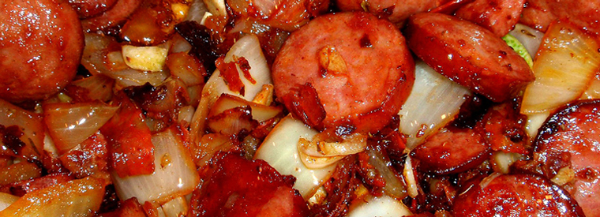

CHAURICO AND PEPPERS

Ingredients
- Red wine (1 cup)
- Tomato paste (1 (6 ounce) can)
- Chorizo sausage (2 pounds)
- Garlic (2 tablespoons)
- Green bell peppers (2)
- Sweet onion (2)
Directions
- In a slow cooker, combine the sausage, green pepper, onion, tomato paste, wine, water, and crushed garlic.
- Stir so that everything is evenly distributed. Cover, and set on Low. Cook for 8 hours.
- Uncover the pot, and cook an additional 2 hours to allow some of the liquid to evaporate.
- Serve over rice, or with Portuguese rolls.